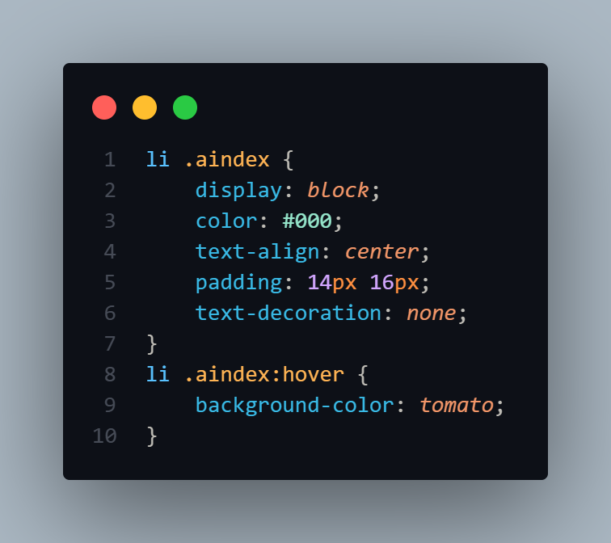

©️Selectores CSS utilizados
Selector universal
Selector por tipo
Selector por id
Selector por clase
Selector por clase con tag particular

Selector por atributo
Selector de lista
Selector por descendientes
Selector hijos directos
Selector hermano adyacente
Selector hermano general